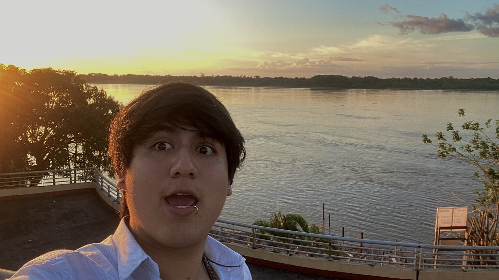

Cristian Guanilo
Mathematics student interested in topology and dynamical systems.

Contact
Email:
cguanilo@pucp.edu.pe
Research interests
Differential topology
Algebraic topology
Education
Pontificia Universidad Católica del Perú
Teaching
Teaching Assistant, Introduction to Real Analysis 1
Teaching Assistant, Introduction to Real Analysis 2
Notes
Topology notes (PDF)